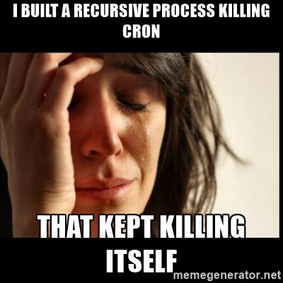

Unix and Unix like systems are commonly referred to as *nix
"Hello World!" programThe command
echo 'Hello World!'
The output
Hello World!
/dev/tty* ]To see the name of your shell run:
echo $SHELL
My output
/bin/bash
fish, zsh, csh, etc."tty" or TeleTYpewriterTo know what terminal driver you are using, run:
echo $TERM
You are running a terminal emulator
Even a Wikipedia article exists on Everything is a File
uptime -p
up 2 days, 23 hours, 38 minutes
pwd commandTo check which directory you are currently in
ls command - Lists filesSyntax:
ls <PATH>
<PATH> is not provided then it defaults to the PWD"ls -A""ls -l"ls -l-Als -lAls -l -Als -Al<TAB> keyman (ual) pages<cmd> -h<cmd> --help"/" - The Root directory/sbin
/bin
/usr/bin
/usr/sbin
/sbin"/home" directoryRun the following command:
echo $HOME
A generalized output
/home/user
"/boot" - The boot directoryKeeps the binaries and configurations required at boot time
<PATH>"/bin/" is absolute but "bin/" is relative to the PWDSo, whatever you type means different in different cases
~ |
Home Directory |
. |
Present Directory |
.. |
Previous Directory |
/ |
Root Directory |
cd <PATH> - Change directoryRun
true false
func a b c = func(a, b, c)
Here func is the command and a, b, c are the arguments
Open a text editor & write the following in it
int main(int argc, char **argv) { return argc - 1; }
Documents/ directoryRun
gcc -o args args.c ./args && echo $? ./args -o args args.c && echo $?
Rectify
./args -o args args.c || echo $?
mkdir <dir_name>
touch <file_name>
Use this when safety is the first priority
rmdir <dir_name>
Syntax
rm -rf <dir_name>
Option description
| -r | Recursively |
| -f | Force |
^X to exitM-I to enable Auto Indent
M = ESC or Alt
I or A)ESC):w filename):q):q!):wq or :x):set autoindent)One of its forms is Ctrl-C or ^C
fg command to resume the process to run in the ForeGroundbg command to resume the process to run in the BackGround<full_command> &
Default usage
ps -e
Verbose usage
ps aux
Signals are sent to a process using the kill command

Give a last wish
kill 1234
Show no mercy
kill -9 1234
Example
ls -l > ls.txt # Sends output(stdout) to ls.txt cat < ls.txt # Sends input from ls.txt to cat
> with >> appends to the filestderr is represented as 2>/dev - The devices/dev/null/dev/zero/dev/input/mice (may not work)/dev/input/mouse0 (may not work)/dev/sd?*/